01
Золотой час
Love story в поле на закате. Ветер, тёплый свет и никакой постановки.
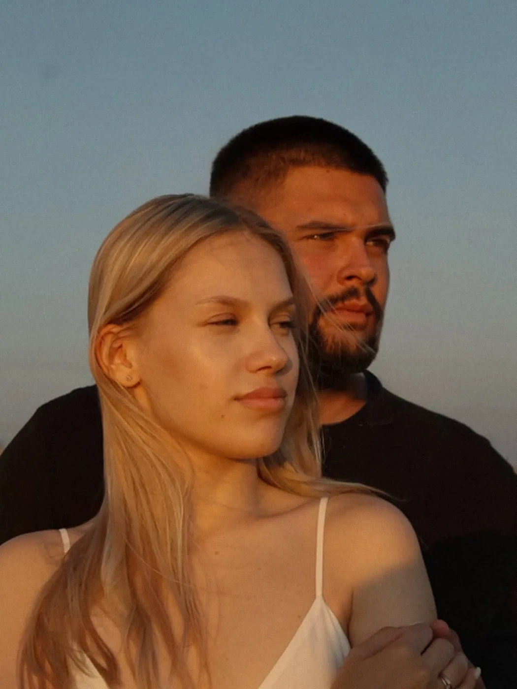
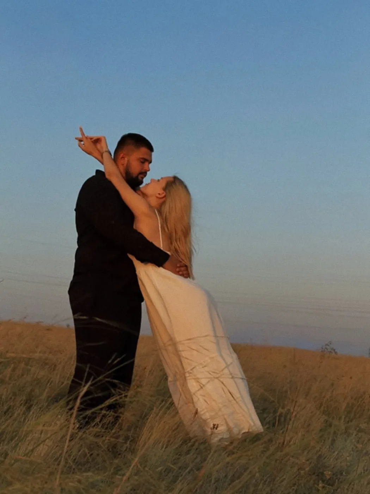
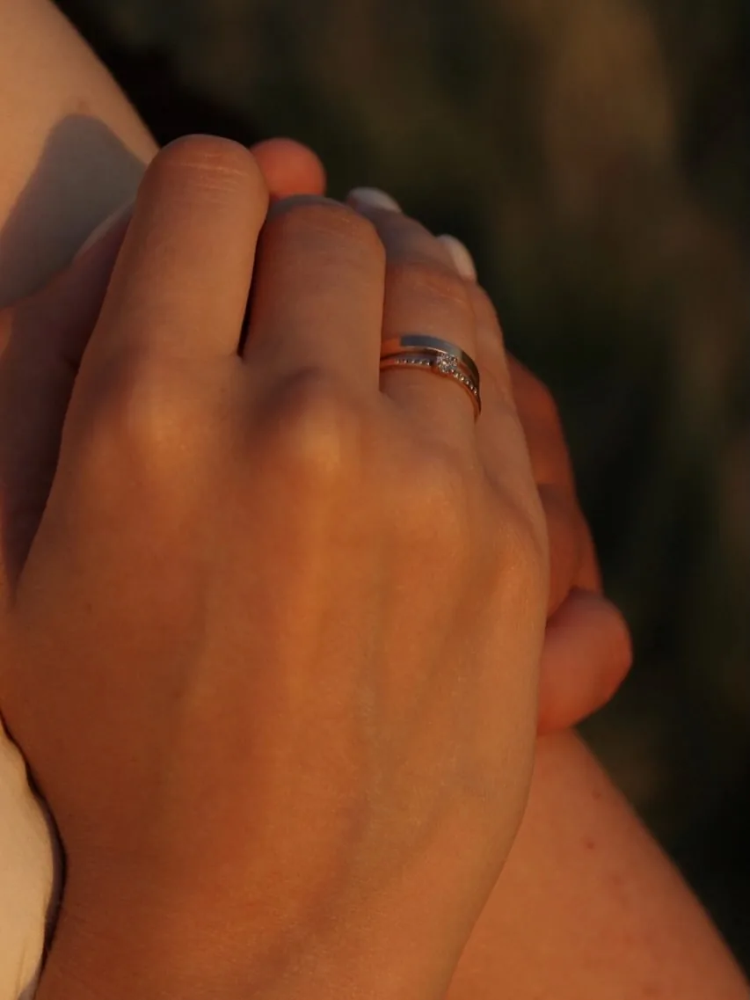
Фотограф · Оренбург
Естественная обработка без кукольного эффекта.
Love story, портреты и семейные съёмки.
Каждая съёмка — маленький фильм. Листай дальше, чтобы посмотреть серии.
Love story в поле на закате. Ветер, тёплый свет и никакой постановки.



Старый центр Оренбурга, колонны и солнце в спину.
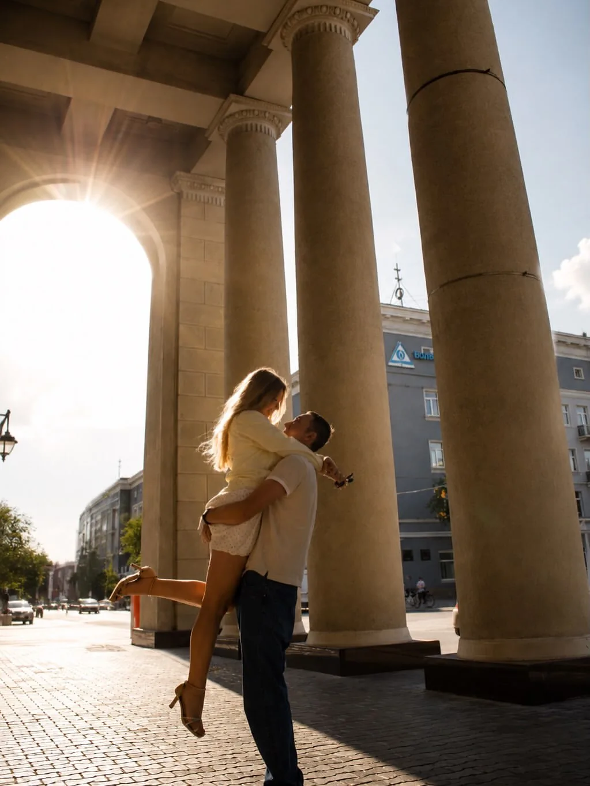
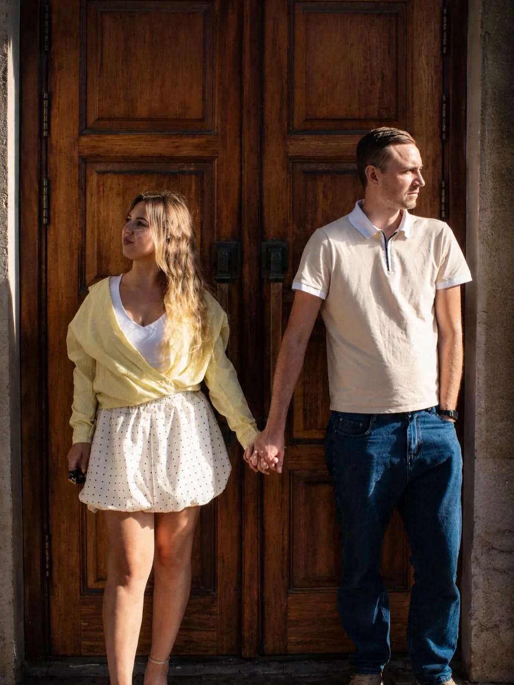
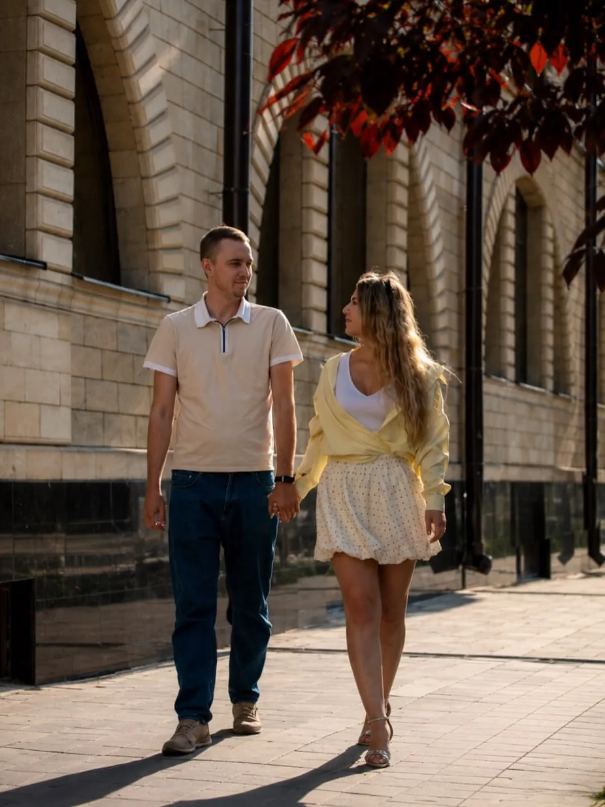
Портрет с характером: кружево, ботфорты и рельсы.
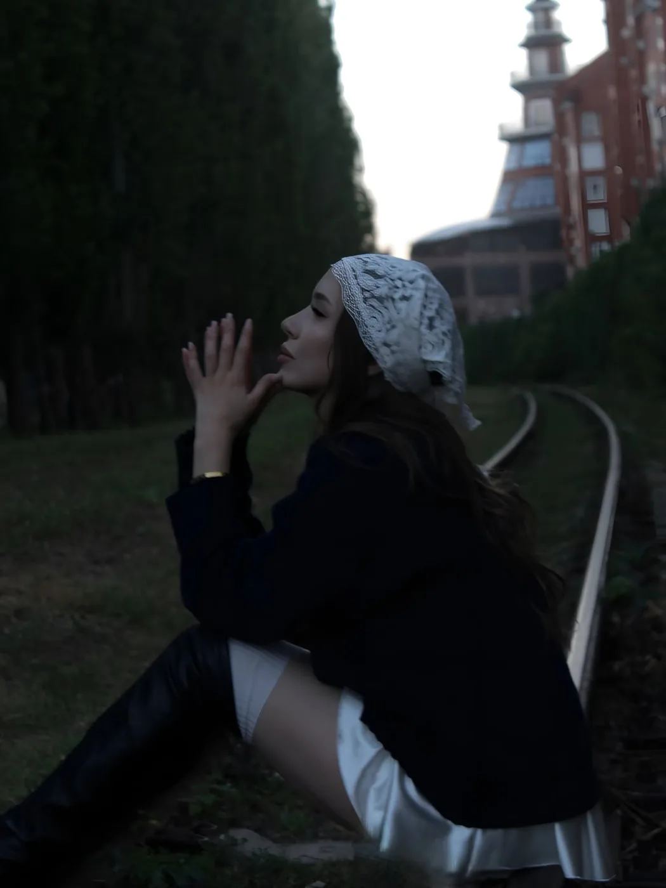
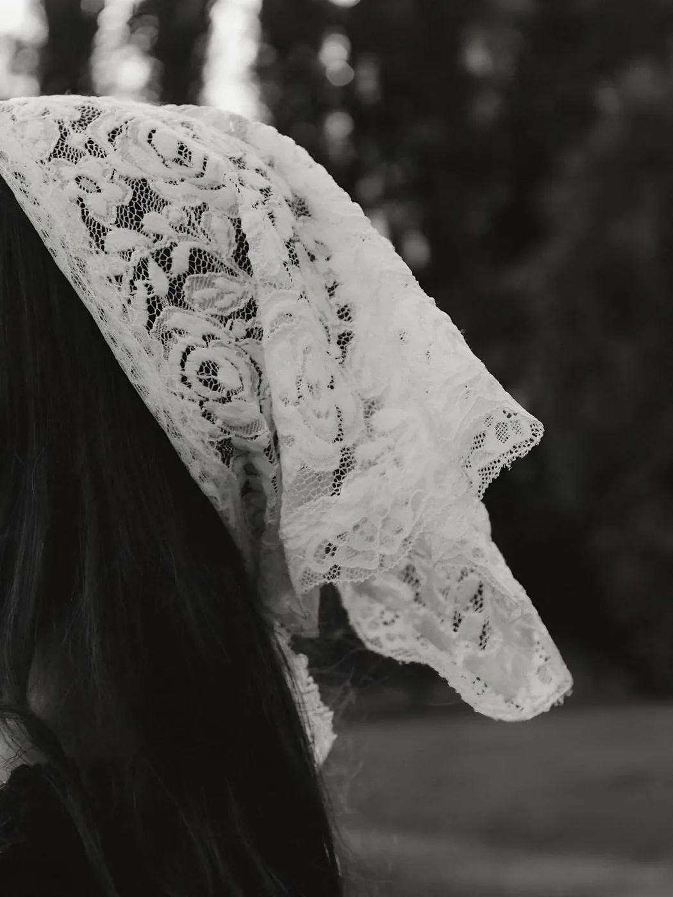
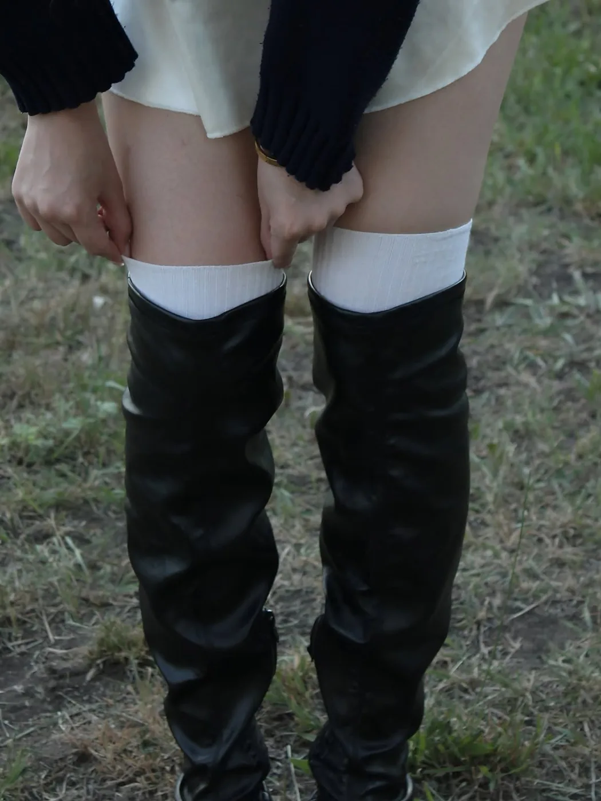
Твоя история — следующая
Обсудить съёмкуОбработка
Кожа остаётся кожей, а ты — собой. Цвет или чёрно-белый — выбирай под настроение. Потяни ползунок.
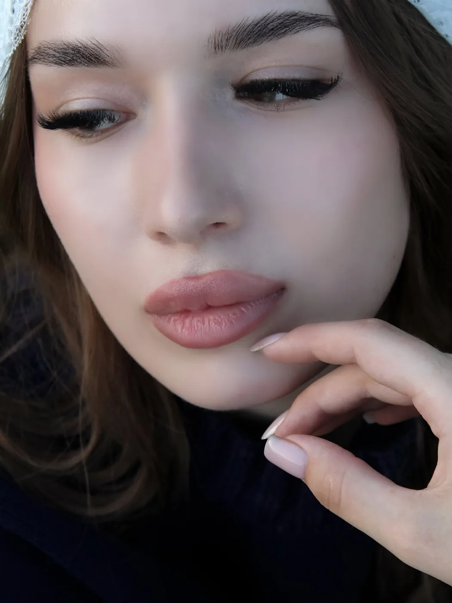
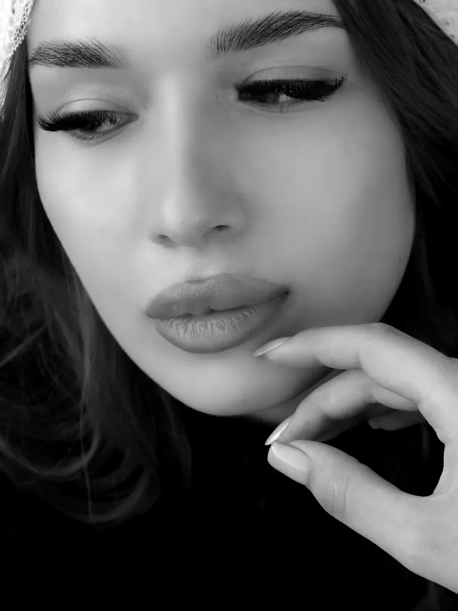
Обо мне
Во все съёмки входит одно и то же — разница только в том, кого снимаем.
1 000 ₽
Портреты для себя, для соцсетей или просто на память.
1 000 ₽
Прогулка вдвоём, где вам не нужно «позировать».
1 000 ₽
Тёплые кадры с детьми, родителями и питомцами.
Аренда студии в стоимость не входит.